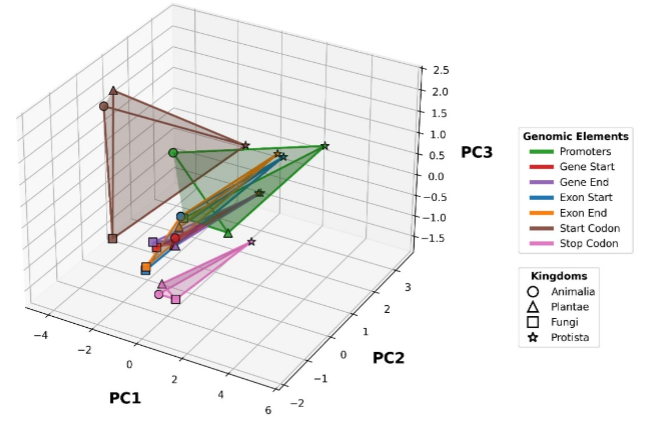
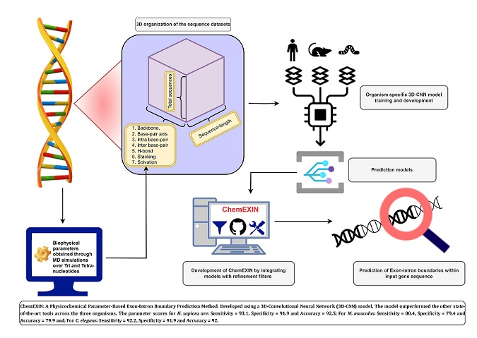

Publications
Biophysical Signatures as Markers for Genomic Elements Differentiation across Eukaryotic Kingdoms [MANUSCRIPT UNDER PREPARATION]
DOI: http://www.scfbio-iitd.res.in/publication/publication.htm
Abstract: DNA is a complex and dynamic molecule, composed of numerous elements that play crucial roles in orchestrating cellular functions. These elements are essential for regulating gene expression, maintaining genome stability, and supporting various cellular processes. However, traditional profiling methods often fall short in providing accurate functional genome annotations, as they do not adequately account for sequence variability within and across different organisms. To overcome this limitation, we conducted an extensive biophysical characterization of genomic elements, focusing on their structural and energetic properties. Utilizing multi-microsecond Molecular Dynamics Simulation-derived parameters over higher nucleotide steps, we uncovered critical details about the physicochemical profiles of key DNA elements. These include Coding Sequences, Promoters, Gene boundaries, Exon-Intron boundaries, Start Codons, and Stop Codons across the four diverse eukaryotic kingdoms. This comprehensive exploration represents a significant advancement in functional genomics and opens new avenues for genome annotation research, enhancing our understanding of eukaryotic genome complexity. Our study identified characteristic biophysical signals associated with key genomic sites across all studied organisms. The results demonstrate that closely related organisms exhibit similar patterns, highlighting the universality of these features. Furthermore, a detailed investigation in humans, which includes additional regulatory regions such as Enhancer boundaries, 3’ UTR boundaries, and 5’ UTR boundaries, reinforces the potential for novel approaches that leverage structural and energetic features to precisely annotate genomic elements with unprecedented accuracy.
Exon-Intron Boundary Detection Made Easy by Physicochemical Properties of DNA [PREPRINT]
DOI: https://doi.org/10.21203/rs.3.rs-4359229/v1
Abstract: Genome architecture in eukaryotes exhibits high complexity. Amidst the numerous intricacies, genes as non-continuous stretches composed of exons and introns has garnered significant attention and curiosity among researchers. Accurate identification of exon-intron boundary junctions is crucial to decipher the molecular biology governing gene expression of regular and aberrant splicing. The currently employed frameworks for genomic signals, which aim to identify exons and introns within a genomic segment, need to be revised primarily due to the lack of a robust consensus sequence and the limitations posed by the training on available experimental data sets. To tackle these challenges and capitalize on the understanding that deoxyribonucleic acid (DNA) exhibits function-dependent local structural and energetic variations, we present ChemEXIN, an innovative method for predicting exon-intron boundaries. The method utilizes a deep-learning (DL) model alongside tri- and tetra-nucleotide-based structural and energy parameters. ChemEXIN surpasses current methods in accuracy and reliability. Our work represents a significant advancement in exon-intron boundary annotations, with potential implications for understanding gene expression, regulation, and biomedical research.
Book Chapters
Deep learning in computer-aided drug design: a case study [PUBLISHED]
DOI: https://doi.org/10.1016/B978-0-443-22299-3.00012-8
Abstract: Computer-aided drug design (CADD) is a rapidly growing field that combines the knowledge of computational chemistry, bioinformatics, and pharmacology to aid in the discovery and development of new drugs. CADD utilizes various computational techniques and tools such as molecular modeling, docking, and machine learning (ML) to predict the properties and interactions of potential drug compounds with their biological targets. One of the significant advantages of CADD is its ability to significantly reduce the time and cost of drug development by allowing for the virtual screening of many compounds in silico instead of relying solely on experimental methods, which can also reduce the number of compounds that must be tested in animal models and clinical trials. As a result, CADD has become an essential tool in modern pharmaceutical research. Molecular dynamics (MD) simulations, which may foretell the motion and interactions of atoms and molecules in a biological system, and docking, which can foretell the binding of a medicinal compound to its target protein, are two examples of CADD techniques. Artificial neural networks (ANNs) and random forests are two ML techniques used in CADD for various tasks, including virtual screening, lead optimization, absorption, distribution, metabolism, and excretion (ADMET) prediction.
The Role of Artificial Intelligence and Machine Learning in Autoimmune Disorders [PUBLISHED]
DOI: https://doi.org/10.1007/978-981-99-9029-0_3
Abstract: The immune system of an organism responds to threats from outside the body. Autoimmunity in immunology is the system of an organism's immune responses against its healthy cells, tissues, and other typical body parts. Therefore, a disorder known as an autoimmune illness results from an inappropriate immune reaction to a healthy bodily function. The science of developing computers with intelligence that both mimics and exceeds that of humans is known as artificial intelligence (AI). Programs having AI capabilities can contextualize and analyze data to deliver information or automatically initiate operations without the need for human intervention. Furthermore, AI can be attained through machine learning. This branch of AI applies to learning to make ever-better judgments using algorithms to discover patterns and acquire insights from data automatically. In this chapter, we present the role of AI and machine learning to analyze how autoimmunity behaves in conditions like autoimmune diseases. Moreover, we also discussed the impact of employing machine learning techniques to optimize precision medicine for patients.